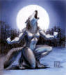
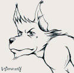
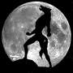

Weerwolven
Het was een begin, niet het begin maar de start van een reeks gebeurtenissen & onverwachte wendingen. De wind droeg de geur van naderend onheil mee en niemand wist hoe het te stoppen. De rassen en de hele wereld leden en kwijnden langzaam weg zonder hoop op beterschap. Het kwaad roerde zich en groeide …
Het noodlot had van het sterke, trouwe volk van de weerwolven vier dapperen samengebracht. Hun namen luiden , , , & . Samen trokken ze op een queeste om datgene te vinden wat het kwaad zou verslaan en waardoor ze de redders van hun volk zouden worden.
 |
 |
 |
Ze liepen dagen en nachten, over bergen en dalen en tijdens hun tocht vergaarden ze bij de lokale bevolking informatie die hen zou helpen. Ze wisten dat er drie zaken nodig waren om het kwade te verslaan en ze stonden op het punt om één van die drie dingen te bemachtigen. Slechts een opdracht scheidde hen van de
MANTEL der ONZICHTBAARHEID
Opdracht: Doe verkleed als weerwolven 10 cafés van Groot-Gavere aan. Leg het bewijs hiervan vast op camera of foto en vraag een handtekening met datum aan de waard of waardin. Als je dit voor volgende week zaterdag om middernacht kan realiseren met je ploeg dan heb je de mantel binnen.
En de sage ging verder ….